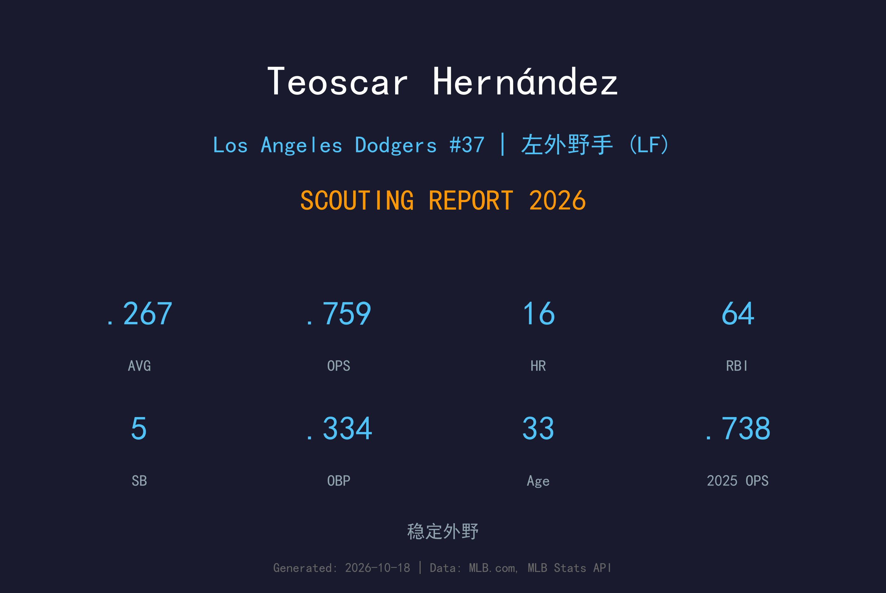
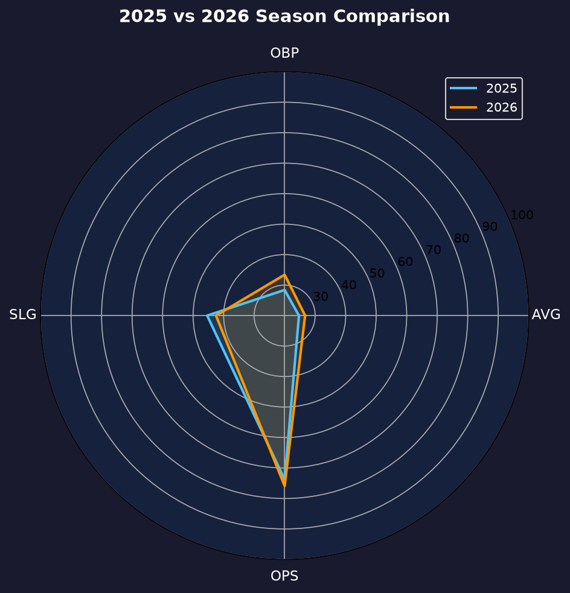
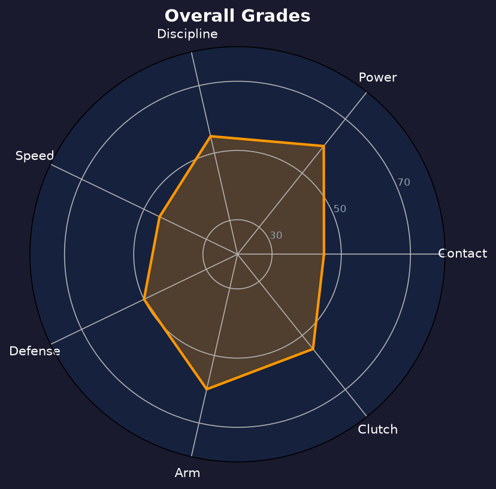

Los Angeles Dodgers #37 | 左外野手 | 右打 | 重炮外野

Teoscar Hernández 是道奇左外野的重炮型打者，以 raw power、强壮体格和大挥棒著称，是打线中最具瞬间改变比赛能力的球员之一。
2024年加盟道奇即夺世界大赛冠军，2025年入选全明星并夺得全垒打大赛冠军，证明自己的长打火力仍是联盟顶级。2026年他完成125场出赛，打击率.267、16轰、64打点，OPS .759——长打产量较2025年的25轰有所回落，但上垒率从.284大幅提升至.334，打型明显进化。
34岁的 Teoscar 仍是道奇外野轮换的核心成员。他的臂力和防守经验让他在左外野站稳主力，而改善后的选球让他的攻击价值不再单纯依赖全垒打。季后赛经验丰富，是更衣室的重要声音。
在多伦多连续缴出15+轰赛季，成为美联最具威胁的右打重炮之一。
加盟道奇首年即随队夺冠，季后赛多次贡献关键长打。
25轰89打点入选全明星，并在全垒打大赛封王，raw power 获全联盟认可。

| 赛季 | G | AVG | OBP | SLG | OPS | HR | RBI | BB | SO |
|---|---|---|---|---|---|---|---|---|---|
| 2025 | 134 | .247 | .284 | .454 | .738 | 25 | 89 | 26 | 134 |
| 2026 | 125 | .267 | .334 | .425 | .759 | 16 | 64 | 42 | 135 |
Teoscar 的挥棒以大角度上挥为核心，配合强壮核心与手腕力量，能把球打到全场任何地方。2026年他的击球初速依然顶级，但仰角分布更平，长打率从.454降至.425，全垒打从25支降至16支——力量还在，只是球的飞行距离变短了。
这是他2026年最大的进步：保送从26次增至42次（保送率8.6%），上垒率从.284跃升至.334，OBP-AVG差距从.037扩大到.067。他开始愿意接受保送、不再强行追打边缘球，这让他的攻击轮廓从"纯重炮"转向"上垒+长打"复合型打者。代价是三振率仍高达27.5%（135K），两好球后的缠斗能力仍是短板。
左外野防守中上水平，步法稳健、路线判断成熟。臂力是他防守端的招牌，多次从警告轨道长传阻杀跑者。34岁的脚步范围略有缩减，但站位智慧弥补了不少。
出赛125场、.267/.334/.425、OPS .759，WRC+水准在联盟平均以上。BABIP .347 是全队最高之一，显示打击率有一定运气成分，但也反映他强击球频率的进步。整体而言，这是一个"以量换质"的转型赛季——轰数少了9支，但上垒贡献显著提升，打序价值反而更稳定。

进化中的重炮外野，选球升级让攻击价值更立体
B 级 / 主力级重炮
道奇 2026 季后赛战绩：NLDS 3-1 晋级、NLCS 0-4 止步。
| G | PA | AVG | OBP | SLG | OPS | HR | RBI | BB | SO |
|---|---|---|---|---|---|---|---|---|---|
| 8 | 32 | .200 | .226 | .300 | .526 | 1 | 3 | 1 | 10 |
Teoscar Hernández 将在2027赛季迈入35岁。他的 power 底子仍在，但长打产量的连年下滑和三振问题都需要正视。2026年的选球进化是个好兆头——如果能维持.330+上垒率，即使轰数停在15-20支，他仍是合格的主力左外野。
2026：125场、16轰、64打点、.267/.334/.425——转型季，上垒升级、火力降级
2027：关键调整期，目标维持OPS .750+并找回20轰水准；否则将逐步转为轮值/代打角色
2028+：角色球员化，以经验与对左投火力争取阵容席位
Teoscar Hernández 出生于多米尼加共和国的 Cotuí，这座小镇以盛产棒球人才闻名。他在2011年与休斯顿太空人签约，2016年被交易至多伦多蓝鸟后登上大联盟，并在多伦多逐渐成长为联盟最具威胁的重炮外野手之一。
2022年球季中期，他被交易至西雅图水手；2024年，他以自由球员身份加盟洛杉矶道奇，首个赛季就随队夺得世界大赛冠军。2025年，他入选全明星并夺下全垒打大赛冠军，成为道奇球迷的新宠。
在道奇更衣室，Teoscar 以爽朗个性著称，是拉丁裔球员群体的领袖之一。他与队友 Mookie Betts、Freddie Freeman 等人建立了深厚友谊，常被镜头捕捉到在休息区带动气氛。